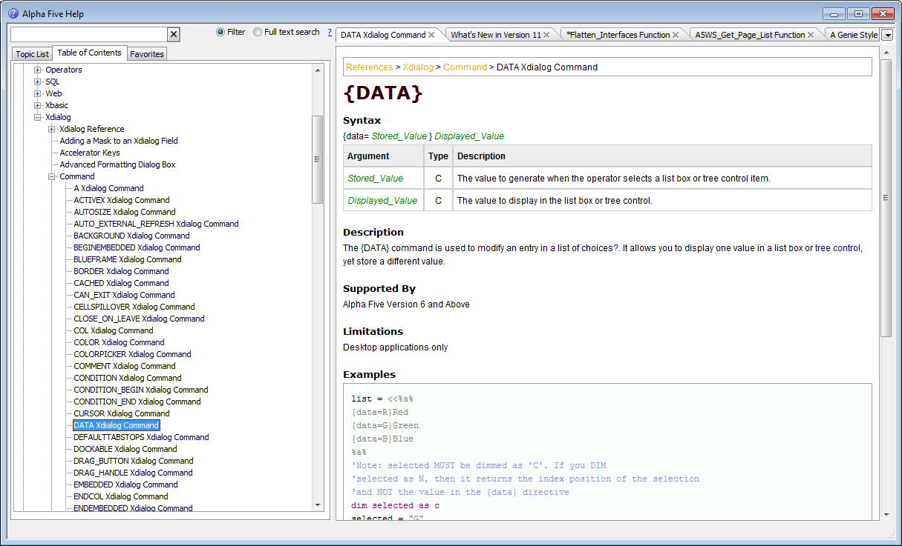

Documentation Viewer
A new documentation viewer has been built into Alpha Five. The documentation viewer uses a local copy of the Alphapedia documentation wiki, so you do not need to be connected to the Internet to use the Alpha Five documentation.New buttons on the Control Panel and Web Control Panel make it easy to open the documentation viewer.
Key features of the Documentation Viewer include:
- Read documentation from within the Alpha Five environment
- Disconnected viewing - don't need an Internet connection
- Find topics quickly - filtering and full text searching
- Save and restore open tabs
- Save tab list of exit
- Two window styles - MDI and Modeless - Modeless is ideal for users with two monitors - keep the documentation open at all times on the second monitor
- Real-time help in code editors - As soon as you type a function or method name in a code editor, the documentation synchronized on that function or method
- Print topics to PDF
- Browser like experience - Back and Next buttons to see previously viewed topics
- Add notes to any topic
- Add user defined topics
- Mark individual topics as 'favorites' so you can quickly find them again.
- Every topic in the Documentation Viewer has a button at the end of the topic that allows you to send feedback on the topic.
- Table of Contents is displayed in a tree view
- 'Breadcrumbs' - When a topic is displayed, a series of hyperlink breadcrumbs is shown that indicate where this topic fits in the overall structure of the documentation. The placement of the breadcrumbs is controlled in the Preferences dialog. The breadcrumbs can be above, below or above and below the help text.

The following videos demonstrate the features of the documentation viewer:
Watch video - part 1
Watch video - part 2
Watch video - part 3
Watch video - part 4
Note about images in the documentation. When you first view a particular topic in the Documentation Viewer, the images in the topic are displayed from the Alpha Wiki website. This means that in order to see the images you would need to have an internet connection. However, as the images are retrieved from the wiki, they are cached locally so that the next time you visit that particular topic, the images will be read from the local cache. That means that if you are viewing the documentation and you do not have an internet connection, topics that were previously viewed when a connection was available will show images, but if you have not previously viewed the topic, the images will not be visible.